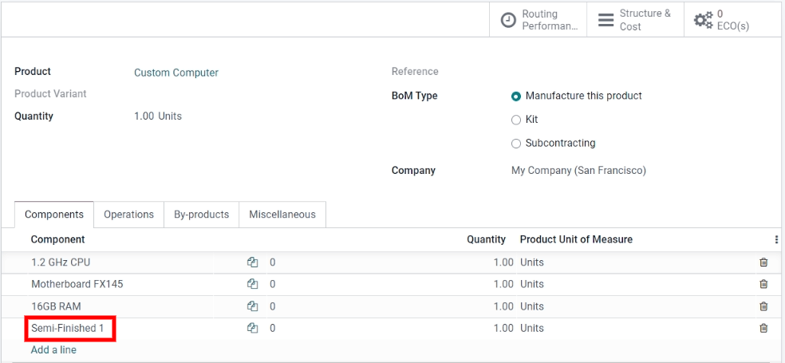

Gestionar productos semielaborados¶
Un producto semielaborado (o subensamblaje) es aquel que se utiliza como componente en la lista de materiales (LdM) de otro producto. Los productos semielaborados se utilizan para simplificar LdM complejas o para representar con mayor precisión un flujo de fabricación. Una lista de materiales que incluye productos semielaborados se conoce como una LdM de varios niveles, donde se distinguen el producto principal de nivel superior y sus subconjuntos.
Configurar productos semielaborados¶
Para configurar una lista de materiales de varios niveles también debe configurar el producto de nivel superior y los productos semielaborados, así que el primer paso es crear los productos semielaborados y sus LdM.
Ver también
Crear la lista de materiales (LdM) del nivel superior¶
Tras configurar los productos semielaborados por completo, vaya a y cree el producto de nivel superior. Después, configure las especificaciones del producto como desee y asegúrese de guardar.
Una vez que configuró el producto de nivel superior, haga clic en el botón inteligente Lista de materiales en el formulario del producto. Luego haga clic en crear para elaborar una LdM para el producto de nivel superior y solo agregue los productos semielaborados a esa lista junto con cualquier otro componente necesario.
Gestionar la planificación de producción¶
Hay varios métodos para gestionar la automatización de órdenes de fabricación para productos con listas de materiales de múltiples niveles.
Nota
Los productos semielaborados se utilizan específicamente para gestionar los productos que se fabrican con LdM de varios niveles. Si crea una lista de materiales solo para organizar componentes o agrupar productos vendibles, es una mejor opción usar los kits.
Hay dos opciones para activar de forma automática las órdenes de fabricación de productos semielaborados después de confirmar una orden de fabricación del producto principal:
Opción 1 (recomendada): cree reglas de reordenamiento para los productos semielaborados y establezca las cantidades de existencias mínimas y máximas deseadas en
0.
Ver también
Opción 2: active la opción Reabastecer sobre pedido (MTO) y las rutas de Fabricación en la pestaña Inventario del formulario del producto semielaborado.
La primera opción es más flexible que la segunda, así que es la más recomendada. Las reglas de reordenamiento no vinculan directamente la demanda de reabastecimiento y, por lo tanto, permiten que las existencias no se reserven y se redirijan a otras órdenes, en caso necesario. La ruta Reabastecer sobre pedido (MTO) crea un vínculo único entre los productos semielaborados y de nivel superior, reservando cantidades solo para la orden de fabricación de nivel superior confirmada.
Sin importar el método que elija, los productos semielaborados deben fabricarse por completo antes de que se pueda comenzar a fabricar el producto de nivel superior.